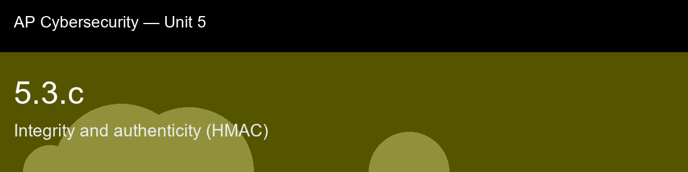

5.3.c recap, Integrity and authenticity (HMAC)
Nice work today. Here's what to lock in:
- Recap handout:
post-lecture-handout.docx
- Simulation: SimLab
- Self-check quiz: due before next class
The big picture: The detail worth remembering longest is why HMAC doesn't just do the obvious thing, hash the secret and message concatenated together, and it comes down to length-extension attacks on Merkle-Damgard hashes like SHA-256: the digest exposes exactly the internal state an attacker needs to keep hashing from, letting them extend a message and produce a valid tag for it without ever learning the key. HMAC's double-nested construction specifically closes that leak. You don't need the ipad/opad constants memorized, but you should walk away able to state precisely what integrity means versus what authenticity means, because that distinction is the whole atom in miniature, and it's the exact gap that 5.4.c's digital signatures close one level further, HMAC proves authenticity to anyone who shares the secret, but can't prove which of the two secret-holders actually sent a message; a signature, built on an asymmetric key pair instead of one shared secret, finally closes that last gap too.
Key terms to lock in:
- MAC (Message Authentication Code), a keyed hash/tag that proves both integrity and authenticity.
- HMAC, the standardized (NIST FIPS 198-1) hash-based MAC construction using nested, keyed hashing.
- Tag, the output of a MAC/HMAC computation, compared during verification (analogous to a digest, but keyed).
- Integrity, assurance that data was not altered.
- Authenticity, assurance that data really came from the claimed, key-holding sender.
- Length-extension attack, exploiting a Merkle-Damgard hash's exposed internal state to extend H(secret||message) without knowing the secret.
- ipad / opad, fixed padding constants XORed with the key to derive HMAC's two nested keyed inputs.
- Digital signature, the asymmetric analog to a MAC, using a private/public key pair instead of a shared secret (see 5.4.c).
Common misconceptions -- don't fall for these:
- "A matching hash proves the message wasn't tampered with." → Only if the attacker could not also recompute the hash after tampering. A plain, keyless hash gives no such guarantee once an attacker can rewrite both the message and its accompanying hash.
- "H(key + message) is basically the same as HMAC." → Naive concatenation is vulnerable to length-extension attacks on Merkle-Damgard hashes (MD5/SHA-1/SHA-256); HMAC's nested nested construction is specifically designed to prevent this.
- "HMAC encrypts the message." → HMAC produces a tag for verification; it does not hide or encrypt the message content at all. Confidentiality requires separate encryption.
- "Integrity and authenticity are the same thing." → Integrity means unaltered; authenticity means it really came from the claimed sender. A plain hash can offer integrity (over a trusted channel) without authenticity; HMAC offers both because only the key holder can produce a valid tag.
Learning objective(s): 5.3.B, 5.3.C

## 5.3.c recap, Integrity and authenticity (HMAC)
Nice work today. Here's what to lock in:
- Recap handout: `post-lecture-handout.docx`
- Simulation: SimLab
- Self-check quiz: due before next class
**The big picture:** The detail worth remembering longest is why HMAC doesn't just do the obvious thing, hash the secret and message concatenated together, and it comes down to length-extension attacks on Merkle-Damgard hashes like SHA-256: the digest exposes exactly the internal state an attacker needs to keep hashing from, letting them extend a message and produce a valid tag for it without ever learning the key. HMAC's double-nested construction specifically closes that leak. You don't need the ipad/opad constants memorized, but you should walk away able to state precisely what integrity means versus what authenticity means, because that distinction is the whole atom in miniature, and it's the exact gap that 5.4.c's digital signatures close one level further, HMAC proves authenticity to anyone who shares the secret, but can't prove *which* of the two secret-holders actually sent a message; a signature, built on an asymmetric key pair instead of one shared secret, finally closes that last gap too.
**Key terms to lock in:**
- **MAC (Message Authentication Code)**, a keyed hash/tag that proves both integrity and authenticity.
- **HMAC**, the standardized (NIST FIPS 198-1) hash-based MAC construction using nested, keyed hashing.
- **Tag**, the output of a MAC/HMAC computation, compared during verification (analogous to a digest, but keyed).
- **Integrity**, assurance that data was not altered.
- **Authenticity**, assurance that data really came from the claimed, key-holding sender.
- **Length-extension attack**, exploiting a Merkle-Damgard hash's exposed internal state to extend `H(secret||message)` without knowing the secret.
- **ipad / opad**, fixed padding constants XORed with the key to derive HMAC's two nested keyed inputs.
- **Digital signature**, the asymmetric analog to a MAC, using a private/public key pair instead of a shared secret (see 5.4.c).
**Common misconceptions -- don't fall for these:**
- "A matching hash proves the message wasn't tampered with." → Only if the attacker could not also recompute the hash after tampering. A plain, keyless hash gives no such guarantee once an attacker can rewrite both the message and its accompanying hash.
- "`H(key + message)` is basically the same as HMAC." → Naive concatenation is vulnerable to length-extension attacks on Merkle-Damgard hashes (MD5/SHA-1/SHA-256); HMAC's nested nested construction is specifically designed to prevent this.
- "HMAC encrypts the message." → HMAC produces a tag for verification; it does not hide or encrypt the message content at all. Confidentiality requires separate encryption.
- "Integrity and authenticity are the same thing." → Integrity means unaltered; authenticity means it really came from the claimed sender. A plain hash can offer integrity (over a trusted channel) without authenticity; HMAC offers both because only the key holder can produce a valid tag.
**Learning objective(s):** 5.3.B, 5.3.C